library(forecast)
library(faraway)
library(tseries)
library(dplyr)Dynamic regression in R
Time series functions used in this document
In the table below, packages with italicized names will need to be installed, while the package names in a standard font face can be found in most base R distributions (though they may need to be loaded into your workspace).
| Package | Function name | Purpose |
|---|---|---|
| stats | acf | Compute and plot autocorrelation |
| stats | Box.test | Ljung-Box test for multilag autocor |
| tseries | adf.test | ADF stationarity test |
| forecast | auto.arima | Identify ARIMA order and coefs |
| dplyr | lag | Create lags of a series (see note) |
| stats | tsp | Extract indexing information for a ts |
| stats | spectrum | Plot a smoothed periodogram |
| forecast | fourier | Generate harmonic regressors |
| forecast | Arima | Fit an ARIMA model with known order |
| forecast | forecast | Look-ahead prediction of a ts model |
Note: dplyr::lag will overwrite the base R lag function, and this is important. Base R will not add ’NA’s to the start of a lagged vector, but the dplyr version does add the NAs, which is needed for the code below to work properly.
Use case 1: Annual U.S. marriage rates
This example will cover cointegration, dynamic regression, and ADL models. Harmonic regression will be covered in the next example.
Data overview
The dataset faraway::divusa contains annual marriage rates (per 1000 unmarried women aged 16+) in the United States from 1920 through 1996, with additional contemporaneous information including unemployment rate and female participation in the workforce. Let’s try to understand why marriage rate changed during this period.
plot(1920:1996,divusa$marriage,ylab='Marriage rate',xlab='Year',
main='U.S. marriage rates, 1920-1996')
text(1946,divusa$marriage[27],'1946 (World War II over)',pos=4,cex=0.75)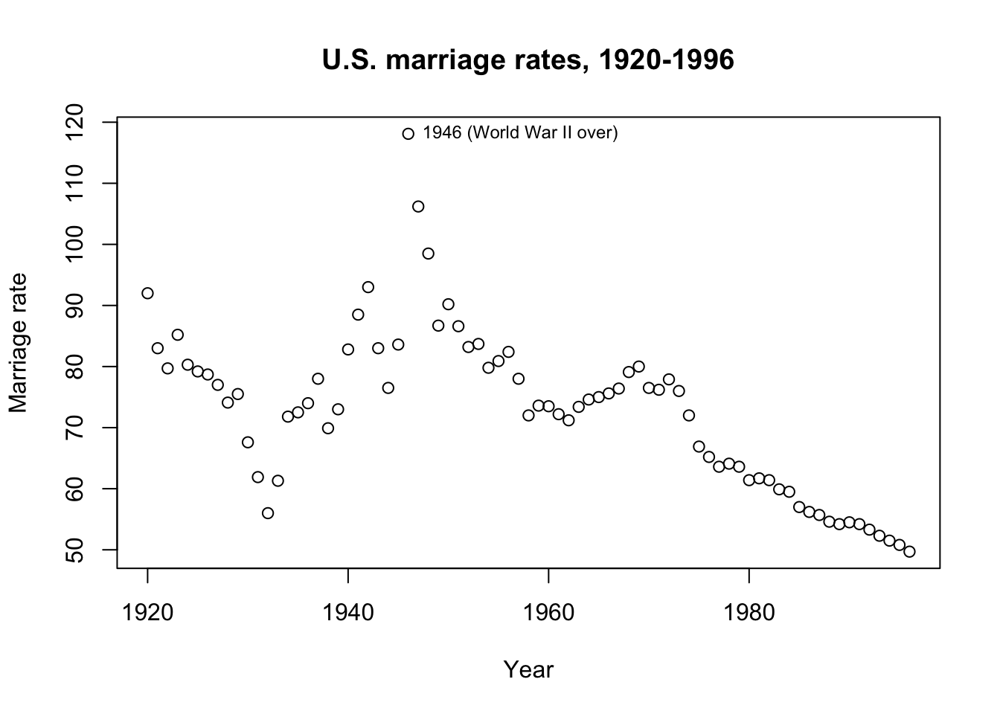
The obvious visual interpretation is probably a good starting point. Marriage rates declined during the Great Depression (1929-1939), spiked when young men came back from overseas wars to a booming economy (1946), and then declined in recent decades with a possible bump when the large Baby Boomer cohort came of age (1965-1970).
Let’s hypothesize some relationships:
Marriage will be inversely correlated with the proportion of women in the workforce. Working women have greater financial independence, working women may have children later in life or not at all, and in times of war working women may serve as a proxy for overseas men, which all tend against marriage.
Marriage will also be inversely correlated with unemployment. When the nation is out of work, the cost of providing for dependents (spouse and/or children) may prove prohibitive. Engagement rings or weddings may also represent large expenses which must be saved for over time, and these savings either do not accumulate while out of work or are re-appropriated for basic needs.
As needed, we might code for the extreme spike of marriages in 1946 (and/or 1947 and 1948) with indicator variables.
Fitting an OLS regression
As a benchmark, we can try OLS regression:
mar.lm <- lm(marriage ~ femlab + unemployed + I(year==1946), divusa)
summary(mar.lm)
Call:
lm(formula = marriage ~ femlab + unemployed + I(year == 1946),
data = divusa)
Residuals:
Min 1Q Median 3Q Max
-15.5149 -3.6814 0.0497 3.2854 24.4060
Coefficients:
Estimate Std. Error t value Pr(>|t|)
(Intercept) 112.37854 3.40836 32.971 < 2e-16 ***
femlab -0.82308 0.07193 -11.443 < 2e-16 ***
unemployed -1.13091 0.16652 -6.791 2.53e-09 ***
I(year == 1946)TRUE 35.48292 7.19539 4.931 4.97e-06 ***
---
Signif. codes: 0 '***' 0.001 '**' 0.01 '*' 0.05 '.' 0.1 ' ' 1
Residual standard error: 7.094 on 73 degrees of freedom
Multiple R-squared: 0.7194, Adjusted R-squared: 0.7079
F-statistic: 62.39 on 3 and 73 DF, p-value: < 2.2e-16plot(1920:1996,mar.lm$residuals,ylab='Residual',xlab='Year',
main='Residual plot after first-stage OLS regression')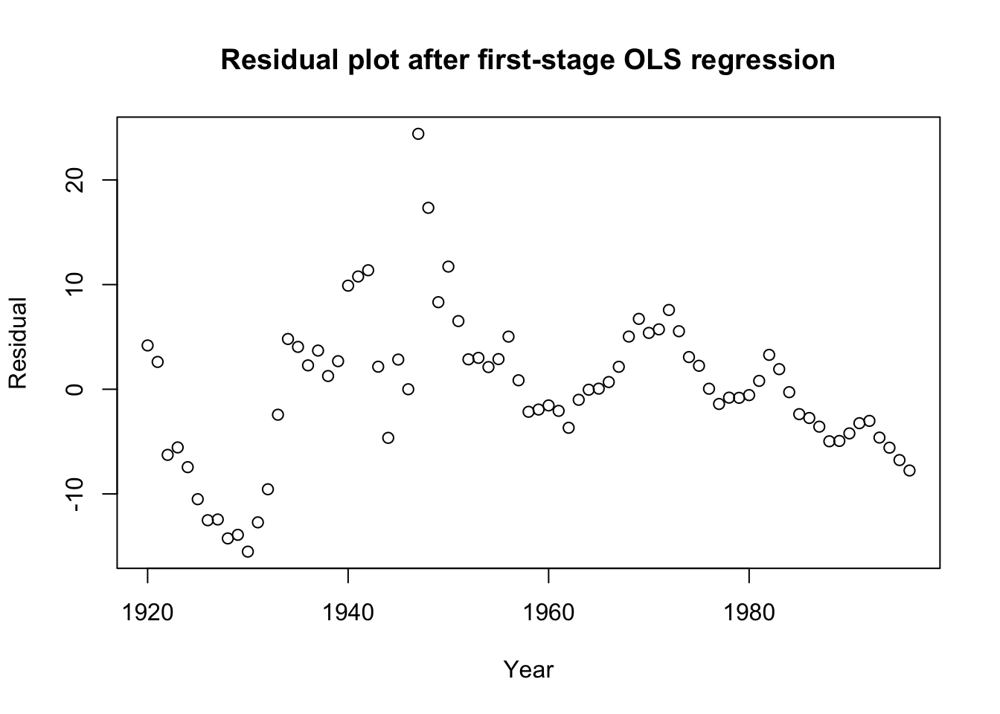
acf(mar.lm$residuals,main='ACF plot for OLS residuals')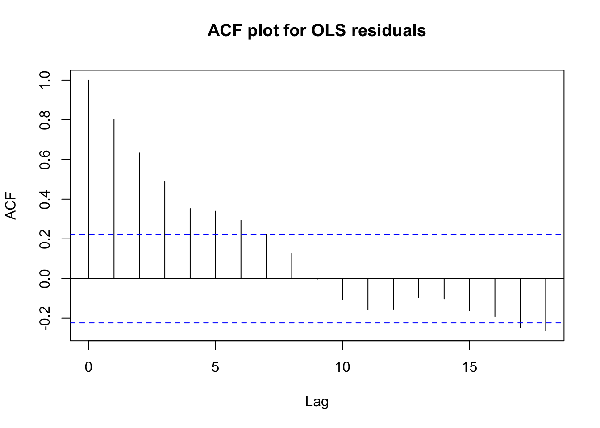
Box.test(mar.lm$residuals,type='Ljung')
Box-Ljung test
data: mar.lm$residuals
X-squared = 51.483, df = 1, p-value = 7.222e-13This benchmark analysis shows preliminary strengths and weaknesses:
All of our predictors are judged to be highly significant
Cumulatively, we can explain 72% of the variation in marriage rates
The signs on the coefficients match our hypotheses
However, the residuals show clear time series autocorrelation
This visual pattern is matched by a Ljung-Box test for independence
Furthermore, we know that we might be looking at a case of spurious regression. We can test this through a series of augmented Dickey-Fuller tests:
#Tests whether original series are stationary
suppressWarnings(adf.test(divusa$marriage)$p.value)<0.1[1] FALSEsuppressWarnings(adf.test(divusa$femlab)$p.value)<0.1[1] FALSEsuppressWarnings(adf.test(divusa$unemployed)$p.value)<0.1[1] FALSE#Tests whether differences series are stationary
suppressWarnings(adf.test(diff(divusa$marriage))$p.value)<0.1[1] TRUEsuppressWarnings(adf.test(diff(divusa$femlab))$p.value)<0.1[1] TRUEsuppressWarnings(adf.test(diff(divusa$unemployed))$p.value)<0.1[1] TRUE#Test whether linear combination is stationary
suppressWarnings(adf.test(mar.lm$residuals)$p.value)<0.1[1] FALSENone of the original series were stationary
All of the differenced series were stationary
The linear combination of the series was not stationary (i.e. no cointegration)
These results are bad news for our regression: our coefficients and the seeming strength of our results are likely being biased by spurious correlation. We may have to differ the data and re-perform this analysis on changes in marriage rate.
diffusa <- as.data.frame(diff(as.matrix(divusa)))
plot(1921:1996,diffusa$marriage,ylab='Change in marriage rate',
xlab='Year',main='Differences of U.S. marriage rates')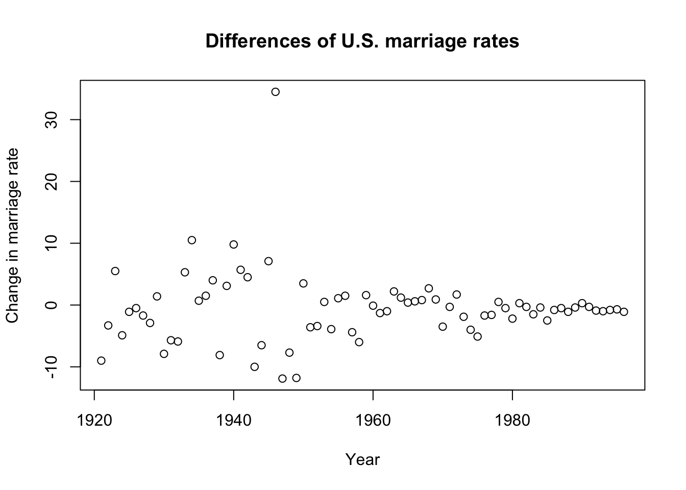
diff.lm <- lm(marriage ~ femlab + unemployed + I(1:76==26), diffusa)
summary(diff.lm)
Call:
lm(formula = marriage ~ femlab + unemployed + I(1:76 == 26),
data = diffusa)
Residuals:
Min 1Q Median 3Q Max
-9.9452 -1.4877 0.0316 1.9010 7.7430
Coefficients:
Estimate Std. Error t value Pr(>|t|)
(Intercept) 0.07549 0.50589 0.149 0.881787
femlab -2.03032 0.58544 -3.468 0.000889 ***
unemployed -1.11079 0.16908 -6.570 6.80e-09 ***
I(1:76 == 26)TRUE 26.49445 4.64909 5.699 2.47e-07 ***
---
Signif. codes: 0 '***' 0.001 '**' 0.01 '*' 0.05 '.' 0.1 ' ' 1
Residual standard error: 3.367 on 72 degrees of freedom
Multiple R-squared: 0.6849, Adjusted R-squared: 0.6718
F-statistic: 52.17 on 3 and 72 DF, p-value: < 2.2e-16plot(1921:1996,diff.lm$residuals,ylab='Residual',xlab='Year',
main='Residual plot of OLS regression on differences',
type='l')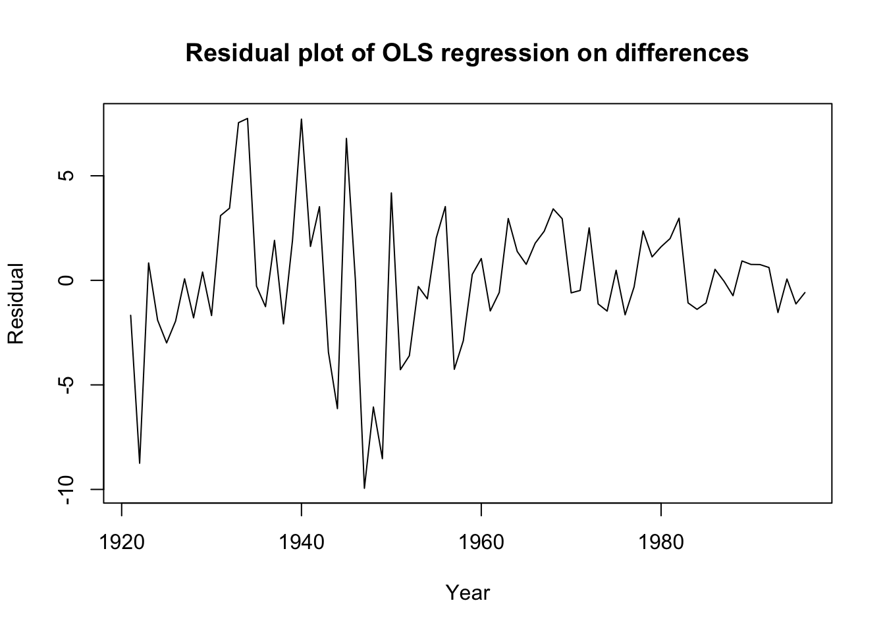
acf(diff.lm$residuals,main='ACF plot for difference residuals')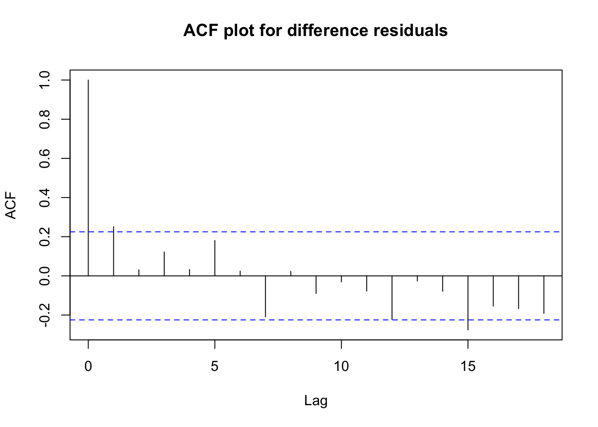
Box.test(diff.lm$residuals,type='Ljung')
Box-Ljung test
data: diff.lm$residuals
X-squared = 4.995, df = 1, p-value = 0.02542This regression on changes is fairly encouraging!
The R2 value of 68.5% is still fairly high: differencing has not removed all of the useful variation from the series.
All of our coefficients are still highly significant and preserve the expected signs.
Although a Ljung-Box test suggests the residuals are not yet independent, the test statistic has dramatically improved.
The raw differences look more stable (if not stationary) and the residuals show no obvious patterns or misspecifications apart from some possible heteroskedasticity.
Let’s use this as our new static benchmark.
Dynamic regression with ARIMA errors
Since we know the original levels of the marriage data are prone to spurious correlation, we should not fit a regression with ARIMA errors to the levels, instead we should fit a regression with ARMA errors to the differences:
diff.xarima <- auto.arima(diffusa$marriage,d=0,
approximation=FALSE,stepwise=FALSE,
xreg=cbind(femlab=diffusa$femlab,
unempl=diffusa$unemployed,
dummy1946=(1:76==26)))
summary(diff.xarima)Series: diffusa$marriage
Regression with ARIMA(0,0,1) errors
Coefficients:
ma1 femlab unempl dummy1946
0.2863 -1.9138 -1.1306 27.4122
s.e. 0.1245 0.4848 0.1652 3.8996
sigma^2 = 10.55: log likelihood = -195.36
AIC=400.71 AICc=401.57 BIC=412.37
Training set error measures:
ME RMSE MAE MPE MAPE MASE
Training set 0.005717085 3.161276 2.320985 47.43886 128.6397 0.5305512
ACF1
Training set -0.01199232Box.test(diff.xarima$residuals,type='Ljung')
Box-Ljung test
data: diff.xarima$residuals
X-squared = 0.011367, df = 1, p-value = 0.9151We now have removed any serial dependence from our residuals and successfully fit an MA(1) model to the error process of our regression on differences. The coefficients all remain significant and with the expected sign. The mild positive MA(1) term suggests that if any year should an unusual change in the marriage rate, the next year will also see an unexpected bump in the same direction (though not as strong).
Autoregressive distributed lag (ADL) model
Since we know the original levels of the marriage data are prone to spurious correlation, we will use differences for our ADL model, just as before.
The dynamic regression with ARIMA errors identified a MA process in the errors… any finite-order MA process is equivalent to an infinite AR process, and I suspect that dynamic regression will prove a more compact, elegant representation than ADL. But I will try, starting with three past lags of my response and my linear predictors.
(Note: None of the predictor lags offered any explanatory power. I fast forward to my final model.)
adldata <- cbind(diffusa[,5:3],lag(diffusa$marriage),lag(diffusa$marriage,2),
lag(diffusa$marriage,3),dummy1946=(1:76==26))
names(adldata)[4:6] <- c('marriageL1','marriageL2','marriageL3')
head(adldata) marriage femlab unemployed marriageL1 marriageL2 marriageL3 dummy1946
2 -9.0 0.09 6.5 NA NA NA FALSE
3 -3.3 0.09 -5.0 -9.0 NA NA FALSE
4 5.5 0.09 -4.3 -3.3 -9.0 NA FALSE
5 -4.9 0.09 2.6 5.5 -3.3 -9.0 FALSE
6 -1.1 0.09 -1.8 -4.9 5.5 -3.3 FALSE
7 -0.5 0.09 -1.4 -1.1 -4.9 5.5 FALSEdiff.adl <- lm(marriage ~ .,adldata)
summary(diff.adl)
Call:
lm(formula = marriage ~ ., data = adldata)
Residuals:
Min 1Q Median 3Q Max
-7.837 -1.469 0.000 1.430 6.772
Coefficients:
Estimate Std. Error t value Pr(>|t|)
(Intercept) -0.28908 0.47382 -0.610 0.54388
femlab -1.52732 0.54041 -2.826 0.00623 **
unemployed -1.33422 0.16855 -7.916 3.75e-11 ***
marriageL1 -0.15159 0.06284 -2.413 0.01863 *
marriageL2 -0.20029 0.06011 -3.332 0.00142 **
marriageL3 -0.16187 0.06113 -2.648 0.01012 *
dummy1946TRUE 27.97662 4.14600 6.748 4.54e-09 ***
---
Signif. codes: 0 '***' 0.001 '**' 0.01 '*' 0.05 '.' 0.1 ' ' 1
Residual standard error: 2.894 on 66 degrees of freedom
(3 observations deleted due to missingness)
Multiple R-squared: 0.7766, Adjusted R-squared: 0.7563
F-statistic: 38.25 on 6 and 66 DF, p-value: < 2.2e-16Box.test(diff.adl$residuals,type='Ljung')
Box-Ljung test
data: diff.adl$residuals
X-squared = 10.102, df = 1, p-value = 0.001481This ADL model performs well, with a high R2 and a low error variance, but its residuals still contain dependencies and the ideas put forward by the model are less believable. Even a fourth lag would be significant, if added… are we really to believe that the change in marriage rate four years ago affects the change in marriage rate this year even after controlling for the intervening three rate changes?
Further, with the more lags we add, the more rows we drop from the beginning of our sample. At some point this will stop being an apples-to-apples comparison with our original dataset. For example, the AIC is no longer directly comparable, since some of the response values were not used in this regression.
rmse <- function(act,pred) sqrt(mean((act-pred)^2))
#In-sample RMSE comparison
c(ols=rmse(diffusa$marriage,diff.lm$residuals),
xarima=rmse(diffusa$marriage,diff.xarima$residuals),
adl=rmse(diffusa$marriage[-1:-3],diff.adl$residuals)) ols xarima adl
4.863327 5.155881 5.153555 Use case 2: Monthly sunspot counts
Harmonic regressors are particularly useful for long and/or non-integer periodicity. Let’s apply to a dataset with both features: monthly sunspot activity.
Data overview
Sunspots are dark blotches on the face of the sun’s surface, which are caused by regions where the Sun’s magnetic field is in temporary flux, blocking the convection of its superheated plasma. Solar activity loosely follows 11-year (or 22-year, depending on how you measure) cycles, although this period is not exactly 11 years and each cycle may show slight variations in total length. A long dataset of monthly sunspot counts (using the “Wolf” or “Zurich” method of counting relative sunspot activity) can be found in datasets::sunspot.month.
These data plot the monthly “relative sunspot count”, which includes approximations and adjustment factors, calculated daily and then averaged over every day of the month.
length(sunspot.month)[1] 3310range(sunspot.month)[1] 0.0 398.2tsp(sunspot.month) # start, stop, and frequency[1] 1749.00 2024.75 12.00plot(sunspot.month,ylab='Mean relative sunspot count')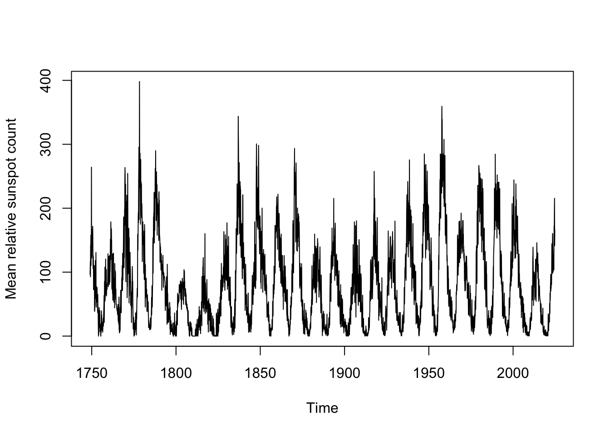
The data clearly would benefit from a variance stabilization, but because of the 0s in the data a Box-Cox transformation would not be possible. We could add a small amount to each month’s total (say, 0.1) and Box-Cox transform from there, but instead since no observations are negative we will simply take a square root transformation.
Estimating the seasonal period
Solar cycles are approximately 11 years (or 132 months), but can we test this? Using a periodogram, we can estimate the power spectrum of the sunspot numbers, finding the exact frequency which has the most “resonance” with the data:
spotroots <- ts(sqrt(sunspot.month),frequency=12,start=1749)
spectrum(spotroots,spans=c(3,5),xlim=c(0,1))
abline(v=c(1/11),col='#7f7f7f')
text(1/11,100,"11-year cycle",pos=4)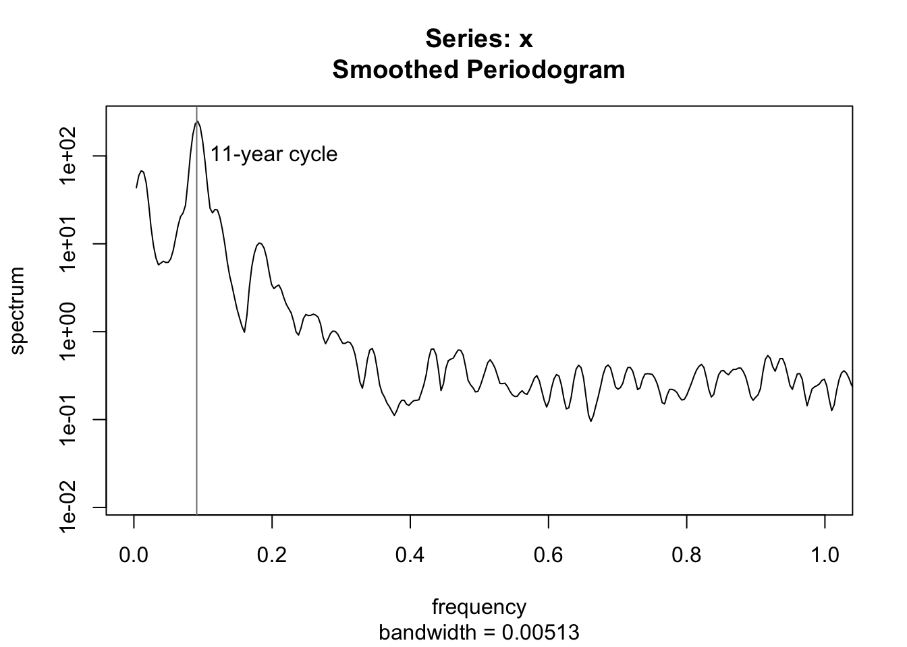
The periodogram does neatly line up with an exact 11-year cycle, but we can test this once again with a grid search. Supposing cycles of slightly different frequencies, we can see which frequency has the highest R2 value when used to explain the monthly totals.
cyclegrid <- seq(10.5,11.5,0.02)
plot(cyclegrid,sapply(cyclegrid,function(z) summary(lm(spotroots~fourier(ts(spotroots,frequency=12*z),K=5)))$r.squared),
ylab=expression(R^2),xlab='Cycle frequency (years)')
abline(v=11,col='#7f7f7f')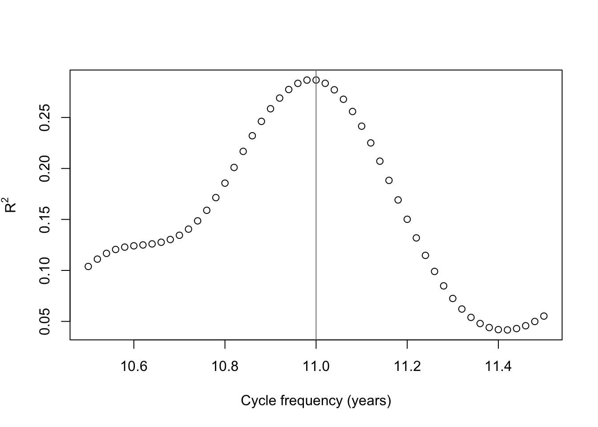
It seems that exactly 11 years is a pretty good guess after all, but if we’re being pedantic, 10.99 years is a slightly better fit to the data. For the sake of argument, to show it can be done, I will fit a 10.99 year frequency — and, over the 3310 months of our sample, the difference adds up to over a quarter-cycle.
Using forecast::fourier it’s very easy to generate harmonic regressors for the data. You only need to supply:
- A ts the same length as your data (note, any vector will do), with a correctly-specified frequency attribute.
- The number of harmonic sine-cosine pairs \(K\) (so, \(K=5\) will generate 10 regressors)
- Optionally, a lookahead forecast period \(h\), so that the appropriate regressors can be generated for your forecasting.
spot.harmonics <- fourier(ts(spotroots,frequency=10.99*12),K=5)
head(round(spot.harmonics,4),12) S1-132 C1-132 S2-132 C2-132 S3-132 C3-132 S4-132 C4-132 S5-132 C5-132
[1,] 0.0476 0.9989 0.0951 0.9955 0.1424 0.9898 0.1894 0.9819 0.2360 0.9718
[2,] 0.0951 0.9955 0.1894 0.9819 0.2820 0.9594 0.3720 0.9282 0.4586 0.8886
[3,] 0.1424 0.9898 0.2820 0.9594 0.4158 0.9095 0.5411 0.8410 0.6554 0.7553
[4,] 0.1894 0.9819 0.3720 0.9282 0.5411 0.8410 0.6906 0.7233 0.8151 0.5794
[5,] 0.2360 0.9718 0.4586 0.8886 0.6554 0.7553 0.8151 0.5794 0.9288 0.3707
[6,] 0.2820 0.9594 0.5411 0.8410 0.7563 0.6543 0.9101 0.4145 0.9900 0.1410
[7,] 0.3274 0.9449 0.6186 0.7857 0.8417 0.5399 0.9721 0.2346 0.9953 -0.0966
[8,] 0.3720 0.9282 0.6906 0.7233 0.9101 0.4145 0.9989 0.0462 0.9444 -0.3287
[9,] 0.4158 0.9095 0.7563 0.6543 0.9598 0.2806 0.9896 -0.1439 0.8402 -0.5423
[10,] 0.4586 0.8886 0.8151 0.5794 0.9900 0.1410 0.9444 -0.3287 0.6885 -0.7252
[11,] 0.5004 0.8658 0.8665 0.4992 1.0000 -0.0014 0.8651 -0.5016 0.4979 -0.8672
[12,] 0.5411 0.8410 0.9101 0.4145 0.9896 -0.1439 0.7544 -0.6564 0.2792 -0.9602matplot((1:132)/12,spot.harmonics[1:132,],type='l',col=rep(c('#000000','#0000bf','#0000ff','#5f5fff','#afafff'),each=2),lwd=rep(c(2,1,1,1,1),each=2),lty=rep(c(1,2),times=5),xlab='Time index (years)',ylab='Regressor value',main='Five sets of harmonic regressors for 10.99-year period')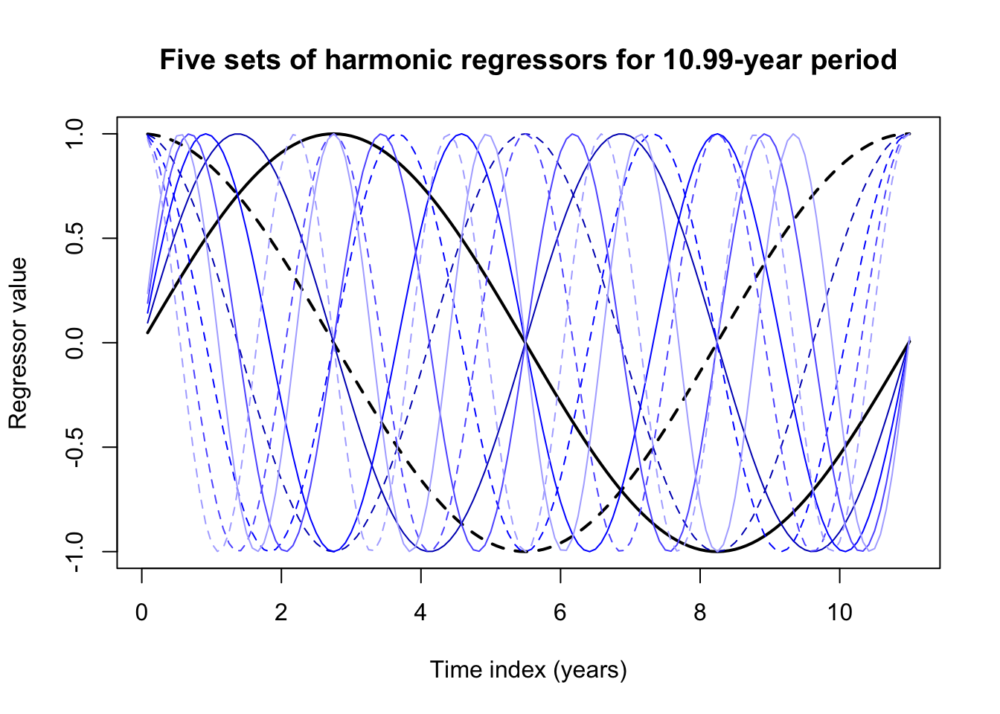
These harmonic regressors by themselves don’t look like much, but linear combinations of their peaks and valleys can approximate almost any seasonal pattern, especially one as smoothly sinusoidal as the sunspots.
spot.reg <- lm(spotroots ~ spot.harmonics)
summary(spot.reg)
Call:
lm(formula = spotroots ~ spot.harmonics)
Residuals:
Min 1Q Median 3Q Max
-9.6090 -2.2602 -0.0888 2.1150 14.8195
Coefficients:
Estimate Std. Error t value Pr(>|t|)
(Intercept) 8.114972 0.058720 138.197 < 2e-16 ***
spot.harmonicsS1-132 2.323309 0.083160 27.938 < 2e-16 ***
spot.harmonicsC1-132 1.879462 0.082925 22.664 < 2e-16 ***
spot.harmonicsS2-132 0.092706 0.083071 1.116 0.265
spot.harmonicsC2-132 0.403041 0.083014 4.855 1.26e-06 ***
spot.harmonicsS3-132 0.066490 0.083008 0.801 0.423
spot.harmonicsC3-132 -0.009917 0.083076 -0.119 0.905
spot.harmonicsS4-132 0.025823 0.083007 0.311 0.756
spot.harmonicsC4-132 -0.104138 0.083076 -1.254 0.210
spot.harmonicsS5-132 0.030746 0.083040 0.370 0.711
spot.harmonicsC5-132 -0.108500 0.083042 -1.307 0.191
---
Signif. codes: 0 '***' 0.001 '**' 0.01 '*' 0.05 '.' 0.1 ' ' 1
Residual standard error: 3.378 on 3299 degrees of freedom
Multiple R-squared: 0.2871, Adjusted R-squared: 0.285
F-statistic: 132.9 on 10 and 3299 DF, p-value: < 2.2e-16plot(seq(1749,by=1/12,length.out=264),spotroots[1:264],
main='Sunspots and harmonic regressors during first 2 cycles',
xlab='Year',ylab='Root of relative sunspot count')
lines(seq(1749,by=1/12,length.out=264),spot.reg$fitted.values[1:264],col='#0000ff')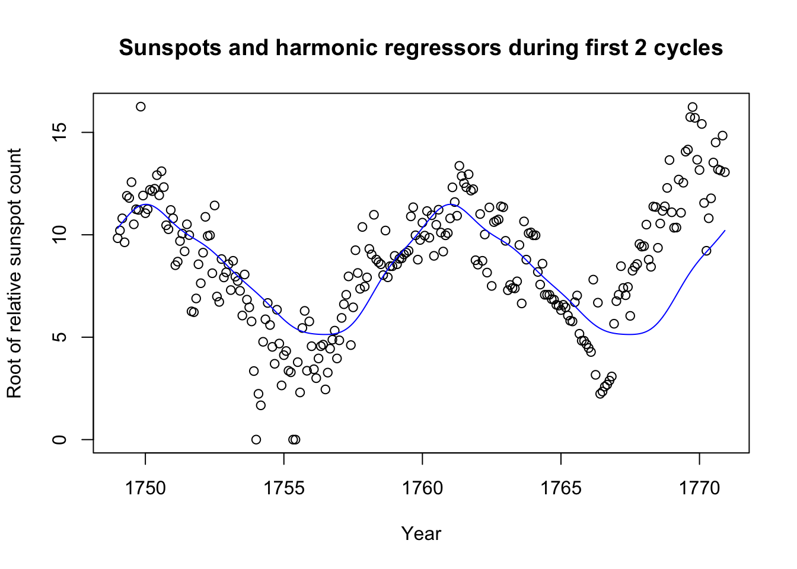
plot(seq(1749,by=1/12,length.out=1320),spotroots[1:1320],
main='Sunspots and harmonic regressors during first 10 cycles',
xlab='Year',ylab='Root of relative sunspot count')
lines(seq(1749,by=1/12,length.out=1320),spot.reg$fitted.values[1:1320],col='#0000ff')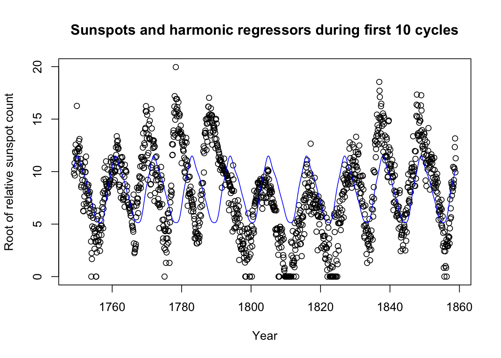
In fact, we did not need to include 5 pairs of terms; 2 might have been enough. Still, the method has its weaknesses too: Looking at 10 total sunspot cycles, we see that sometimes the cycle peaks a few months before or after we might expect.
This first pass might do well enough to control for most seasonal variation. What remains might be long-order ARIMA behavior, or even something to fit with ETS. Let’s look at the residuals from the first ten periods:
plot(seq(1749,by=1/12,length.out=1320),spot.reg$residuals[1:1320],col='#ff0000',type='l',xlab='Year',ylab='Residual',main='Residuals from first 10 sunspot cycles')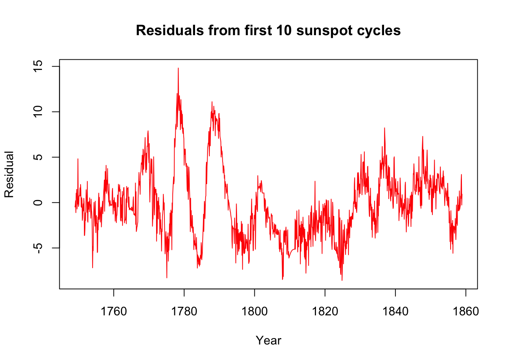
And now we can try adding ARIMA errors. Let’s fit this model to the first 24 cycles and try to predict the 25th.
spot.dynreg <- Arima(spotroots[1:(132*24)],order=c(1,1,1),xreg=spot.harmonics[1:(132*24),])
plot(forecast(spot.dynreg,h=132,xreg=spot.harmonics[(132*24+1):(132*25),]),include=132)
lines((132*24+1):(132*25),spotroots[(132*24+1):(132*25)])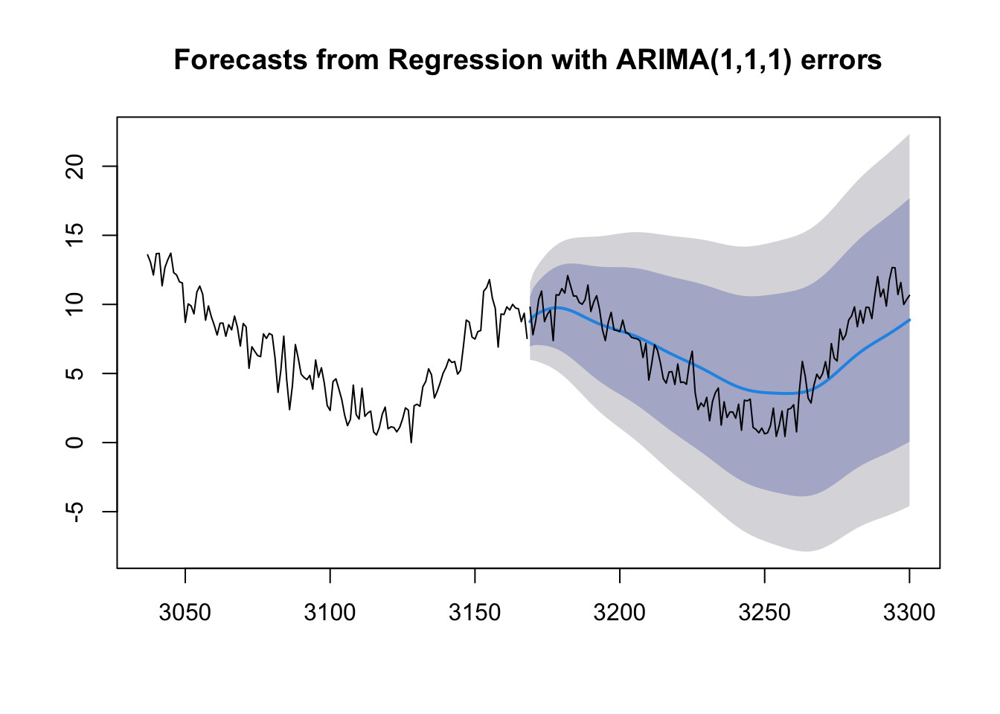